Note
This page is a reference documentation. It only explains the class signature, and not how to use it. Please refer to the user guide for the big picture.
nidl.losses.KernelMetric¶
- class nidl.losses.KernelMetric(kernel='gaussian', bandwidth='scott')[source]¶
Bases:
BaseEstimatorInterface for fast weighting matrix computation.
It computes a weighting matrix
 between input samples based on
Kernel Density Estimation (KDE) [1], [2]. Concretely, it computes the
following weighting matrix between multivariate samples
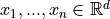:
between input samples based on
Kernel Density Estimation (KDE) [1], [2]. Concretely, it computes the
following weighting matrix between multivariate samples
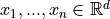: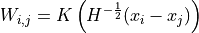
with
 a kernel (or “weighting function”) such that:
a kernel (or “weighting function”) such that: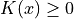 (positive)
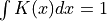 (normalized)
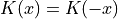 (symmetric)
and 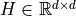 is the bandwidth in the KDE estimation of p(X).
 is a symmetric definite-positive and it can be automatically
computed based on Scott’s rule [3] or Silverman’s rule [4] if required.
In that case, the bandwidth is computed as a scaled version of the
diagonal terms in the data covariance matrix:
is a symmetric definite-positive and it can be automatically
computed based on Scott’s rule [3] or Silverman’s rule [4] if required.
In that case, the bandwidth is computed as a scaled version of the
diagonal terms in the data covariance matrix: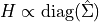
- Parameters:
- kernel: {‘gaussian’, ‘epanechnikov’, ‘exponential’, ‘linear’, ‘cosine’}, default=’gaussian’
The kernel applied to the distance between samples.
- bandwidth: {‘scott’, ‘silverman’} or float or list of float, default=”scott”
The method used to calculate the estimator bandwidth:
If bandwidth is ‘scott’ or ‘silverman’,
is a scaled
version of the diagonal terms in the data covariance matrix.If bandwidth is scalar (float or int),
is set to a
diagonal matrix:
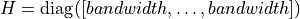.If bandwidth is a list of floats,
is a diagonal matrix
with the list values on the diagonal:
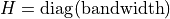.If bandwidth is a 2d array, it must be of shape (n_features, n_features)
Notes
Scott’s Rule [1] estimates the bandwidth as:
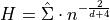
where 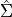 is the covariance matrix of the data,
 is the number of samples, and
is the number of samples, and  is the number of
features (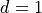 for univariate data). Here, we only consider
the diagonal terms (assuming features decorrelation) for numerical
stability.
is the number of
features (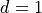 for univariate data). Here, we only consider
the diagonal terms (assuming features decorrelation) for numerical
stability.Silverman’s rule of thumb [2] for multivariate data is:
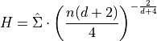
References
[1] (1,2)Rosenblatt, M. (1956). “Remarks on some nonparametric estimates of a density function”. Annals of Mathematical Statistics.
[2] (1,2)Parzen, E. (1962). “On estimation of a probability density function and mode”. Annals of Mathematicals Statistics.
[3]Scott, D. W. (1992). “Multivariate Density Estimation: Theory, Practice, and Visualization”. Wiley.
[4]Silverman, B. W. (1986). “Density Estimation for Statistics and Data Analysis”. Monographs on Statistics and Applied Probability.
- fit(X)[source]¶
Computes the bandwidth in the kernel density estimation.
- Parameters:
- X: array of shape (n_samples, n_features)
Input data used to estimate the bandwidth (based on covariance matrix).
- Returns:
- self: KernelMetric
- pairwise(X)[source]¶
- Parameters:
- X: array of shape (n_samples, n_features)
Input data.
- Returns:
- S: array of shape (n_samples, n_samples)
Similarity matrix between input data.